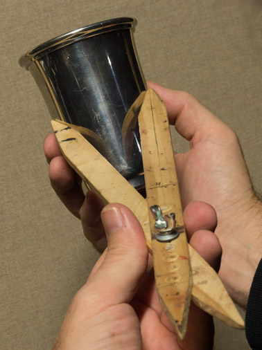

Here is the photograph of a still-life that I will be using for the remainder of this course:

Lay all the photographs of your still life out on a table or on the floor. Arrange them, overlapping if necessary, to create one large image of your still life.
Positioning Your Chair
Begin by checking the position of your chair. Test your chair position by holding a brush and pretending to paint. Adjust your chair position relative to your easel if needed. Also adjust the height of your canvas so that the center is at the same height as your eyes.
Next, position your photoholder as demonstrated at the 7:27 mark of the "making a photograph holder" video.
Using masking tape, tape your reference photo (or photos) onto the right edge of your photo holder (or if you're left-handed, tape the photos to the left edge). Be sure to position your photo holder so that the surface is perpendicular to your line of sight.
If Your Source Photo is a Smaller Scale than Your Painting
I highly recommend painting from photos that are the same scale as your painting. If you do, you will not need a proportional divider — any ruler or simple calipers will do — and you may skip ahead to "How to Draw in Proportion" below.
But if your photos are a different scale than your painting then you will need to use a proportional divider.
Proportional Divider Basics
Watch this video which explains how to use a proportional divider — that way it will be easier for you to follow along as we go through the penciling process.
Setting Your Proportional Divider
Before you can begin to pencil you must set your proportional divider. By changing which hole the screw is in, you can change the "magnification level" of the proportional divider.
Because painting objects smaller than life size is more difficult, I recommend that you paint the objects in your photo life-size or larger (like in the photo below). So you will need to determine which hole to put the screw through in order to achieve a life-sized painting.
First, measure the width of the one of the larger objects in your photo with the small end of your proportional divider.
Now flip your proportional divider over and compare the measurement with the actual width of the largest object. You will need to have the actual object in hand to do this. If you don't have access to one of the objects in your photo, you will just have to make your best guess about the actual width of the object.

If the actual width is smaller than the measurement you took from your photograph, then you will need to move the screw in your proportional divider towards the small end. This will increase the magnification level of your proportional divider.
If the actual width is larger than the measurement you took from your photograph, then you will need to move the screw towards the large end. This will decrease the magnification of your proportional divider.
IMPORTANT: For the remainder of this course, if your photograph is not the same scale as your painting and you have set your proportional divider to adjust for the scale, any time you take a measurement from the photo you will need to use the correct end for the photo, and any time you use your proportional divider on your canvas, you will need to use the correct end for the canvas.
How to Draw in Proportion
Before we begin, watch Part 1 of "How to Paint Realism" below. If you do not have the video, you can either purchase it by clicking the video below, or you can watch my free YouTube video "How to Draw in Proportion" by clicking here. The free video covers the entire process of drawing in proportion, it just does not demonstrate beyond drawing a single silver cup.
Once you have watched Part 1 of "How to Paint Realism" at least once all the way through, re-watch any parts you need to and then continue to the next section below.
REMINDER: If your photo(s) are the same scale as your painting then you will not need to use a proportional divider as I demonstrate in the video. Instead, simply take your measurements from your photo with your calipers or ruler, or if you do use a proportional divider, you do not need to flip it over as you use it (keep using the same side for both photo and canvas).
Drawing Two "Golden Lines
You will begin creating two "golden lines" that cross your subject. One will be perfectly vertical and one will be perfectly horizontal. You will draw these lines on your source photo (or photos) and then draw them again on your canvas.
It really does not matter where you place these lines on your photo so long as they are perfectly vertical and horizontal. Do avoid drawing your golden lines near the very edge of your photographs. You will need to tape all your photographs together (unless you are only working from one) before you can draw in your golden lines, otherwise the lines won't match from photo to photo. Do not use too much tape — this is only temporary so that you can draw the golden lines. Use a ruler or some other long straight edge and a sharp-pointed permanent marker to draw the lines.
If you're comfortable using Photoshop and are making your own prints to paint from, an easier method is to simply add very thin (one pixel) white lines to the photo directly in Photoshop, as I have done with my photo.
Once you have your golden lines drawn in on your photograph, next you will draw those same golden lines on your canvas. Measure from the left edge or the right edge of your photograph (whichever edge is easier) to determine where to place the vertical golden line on your canvas.
After getting a good measurement, plot the point for your vertical golden line onto your canvas.
Once you plot your point, plot a second point (also from the edge of the canvas) and then draw a vertical line through the two points using a ruler or some kind of straight edge. Then repeat for your horizontal golden line.
Once you have completed your two golden lines, you might want to check that the two lines are perfectly perpendicular (at right angles), which you can do by taking a piece of paper and placing the corner of the piece of paper where the two golden lines intersect. If the lines aren't perfectly perpendicular, you can redraw your line.
Plotting Points and Angles
By using the two golden lines on your canvas we can now plot any point by taking only two measurements. Here is the first point I plotted on the first object I'm going to draw.
Continue to plot points for your first object. Below you can see the points I measured for my first object.
Once you plot your points, put a short angled line through each point. These will represent the exact angles of the lines at the point you plotted.
By continuing to plot points and angles you will easily be able to connect the lines afterwards to complete the drawing of your first object.
Once you have as many points with angles lines plotted as possible, then simply draw in your lines. Make sure your lines not only go through your points, but they should also respect the angles that you indicated as well.
Symmetrical Objects
If any of the objects in your photo are symmetrical, draw a straight line across the center of the object before you start to pencil it. This will make it much easier to draw the object while maintaining symmetry.
Drawing Ellipses
Drawing ellipses can be challenging, but they really are not hard to draw well if you start by drawing a cross in the center of the ellipse as I have diagramed below.
Once the cross is drawn in, next draw very short lines to indicate where the ellipse crosses the cross, like this:

Now it will be much easier to draw the ellipse. Note how ellipses have "submarine" noses. They are not sharp points but rather they have a curve at the ends.
Checking Angles with Your Proportional Divider
Getting your angles right is very important. Take a moment and look at the images in this blog post: Drawing Simplified
Checking angles is easy to do with a proportional divider. Keep one of the proportional divider sticks perfectly vertical and then adjust the other stick to match the angle in your still life.
In my video "lessons from a workshop", I explain how to check angles with a proportional divider at the 4:25 mark. The part on checking angles is the only part you need to watch right now.
After you line up one of the proportional divider sticks with the angle you're measuring, always check again to make sure your vertical stick is still perfectly vertical.
Be Careful and Don't Be Afraid to Erase
Do not be afraid to use a pencil eraser if you need to. If you rub too hard with your eraser you might remove some of your canvas stain, so when you pencil in your points, angles, and lines, try to draw lightly. Here is what my canvas looks like after finishing the drawing of the first object: